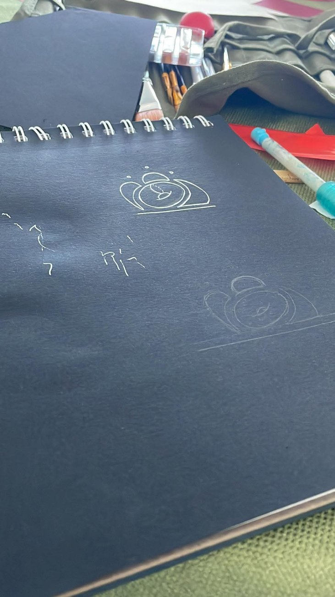
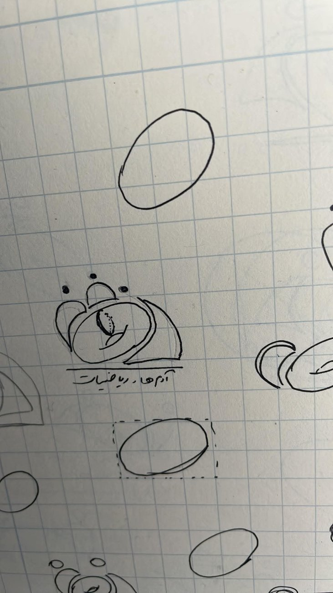
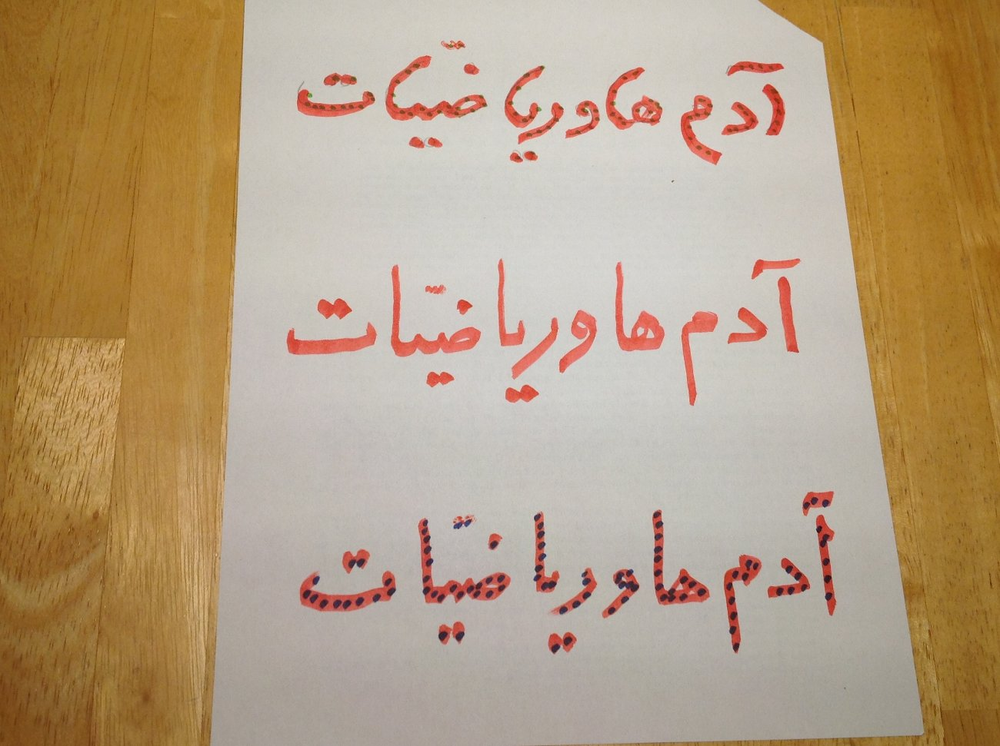
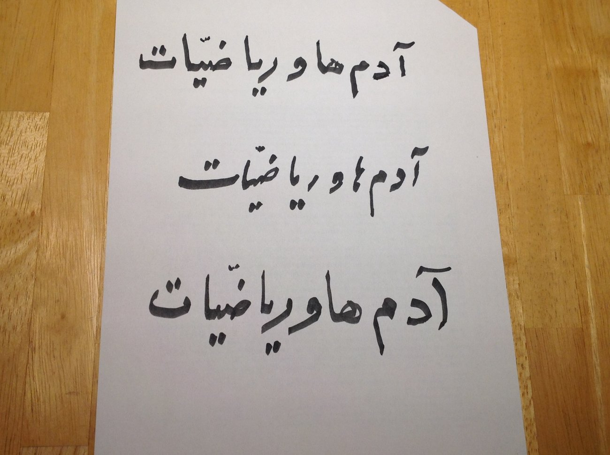
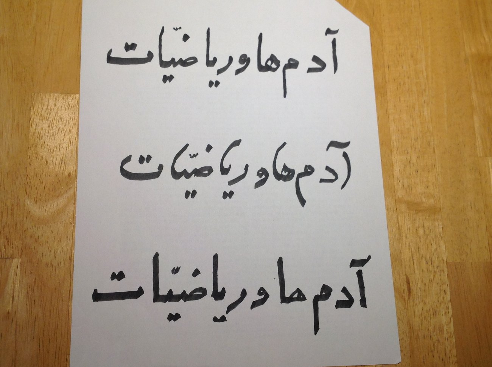
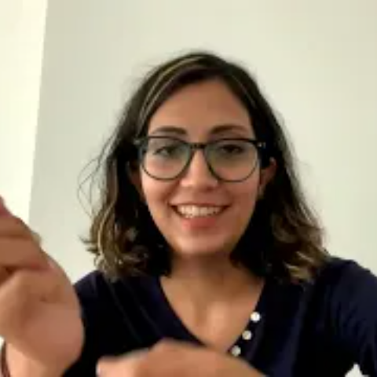

The Story Behind a Logo
Three people, three generations of Iranian mathematics, and the art of asking favours: how the journal’s emblem came to be.
Of course you have seen the People and Mathematics logo. Of course, every time it has appeared before you, you have paused to admire how beautiful and meaningful it is. And of course you have wondered: how on earth did it come about?
Well, the story behind the logo is, in miniature, the story of People and Mathematics itself.
The first sketches were drawn by Tina Torkaman, at Amir Asghari’s request and in conversation with him. Tina is one of the wonderful younger members of Iran’s mathematical community.


The Persian lettering beneath the logo was written — once again at Amir Asghari’s request — by Heydar Radjavi, one of the pioneering figures of modern mathematics in Iran.



Then came the job of bringing the two parts together. That fell to Lili Asghari — again, at Amir’s request. This was the hardest stage of all: Lili is family, and therefore entirely immune to Amir’s powers of persuasion. She does things in her own time. Eventually, however, the pieces found their place, and the People and Mathematics logo was born.
If there were a prize for the art of asking favours, Amir Asghari would surely win it.

Tina Torkaman The first sketches — of the younger generation Visit her website ↗ Heydar Radjavi The Persian lettering — a pioneering figure Visit his profile ↗ Lili Asghari Brought the two parts together — in her own time